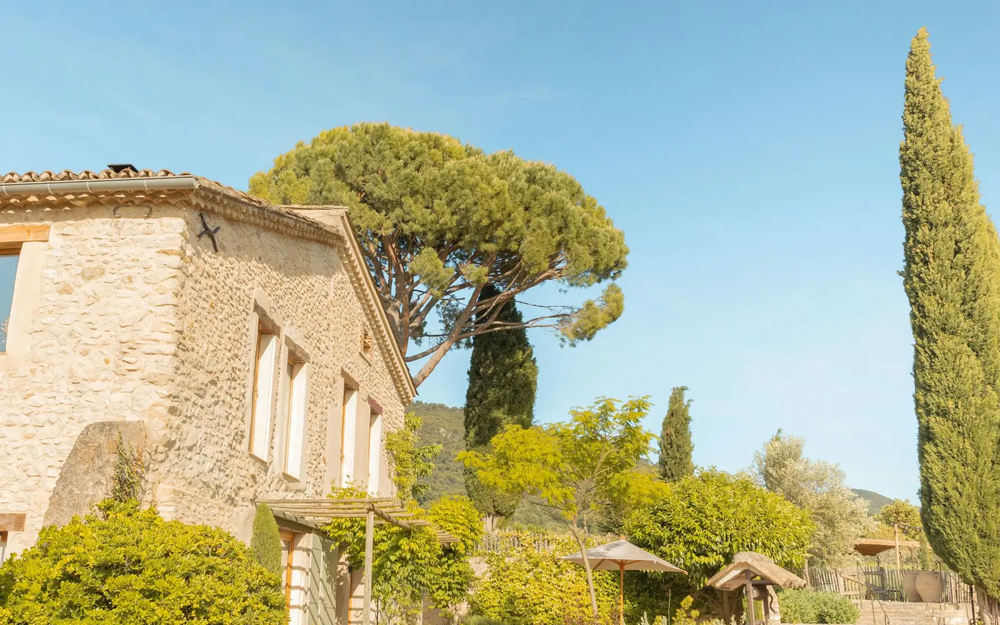
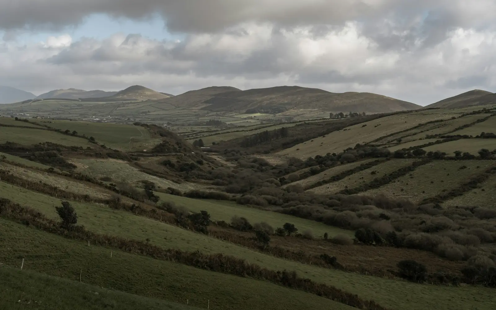
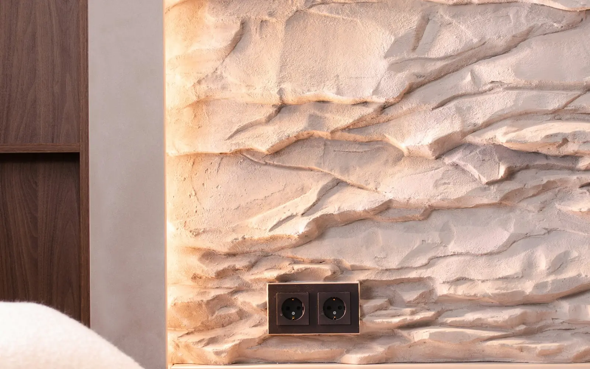

A casa inteira
Dois quartos, sala com lareira e cozinha para usares. Até quatro pessoas. A partir de 180 € por noite, estadia mínima de duas noites. Preço de demonstração.
Conceito de demonstração criado por Gomes IA Digital · negócio fictício

Alojamento rural · lugar fictício
Uma casa de pedra, dois quartos e a casa inteira quando a quiseres só para ti. O caminho é de terra nos últimos metros.
A casa
A Casa do Vale não é um hotel. Não há receção nem pequeno-almoço de buffet. Há uma chave, uma lareira e o silêncio do sítio. O pequeno-almoço fica em cima da mesa, se o combinares na véspera.
Onde ficar

Dois quartos, sala com lareira e cozinha para usares. Até quatro pessoas. A partir de 180 € por noite, estadia mínima de duas noites. Preço de demonstração.

Cama de casal, casa de banho e a janela para o vale. A partir de 95 € por noite. Preço de demonstração.
Cama de casal, mais pequeno, virado ao pátio. A partir de 85 € por noite. Preço de demonstração.
No sítio
A lareira está feita. A lenha da semana fica no alpendre.
Para o pequeno-almoço, quando não chove. Há um toldo curto.
Um trilho desce ao ribeiro e volta pela crista. Não é guiado.
Pedido
Este formulário não reserva a casa. Abre o WhatsApp da Gomes IA Digital com o texto «Quero um site como este» e o que escreveres.